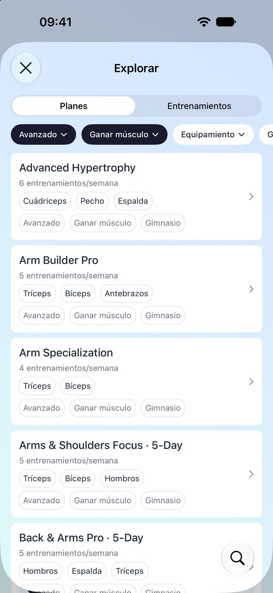
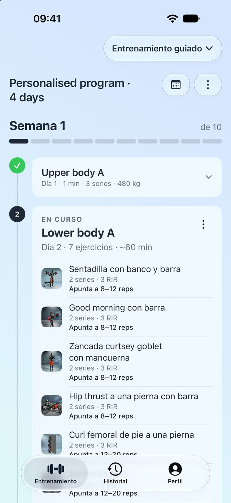
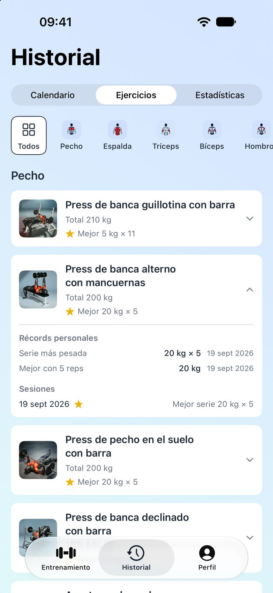
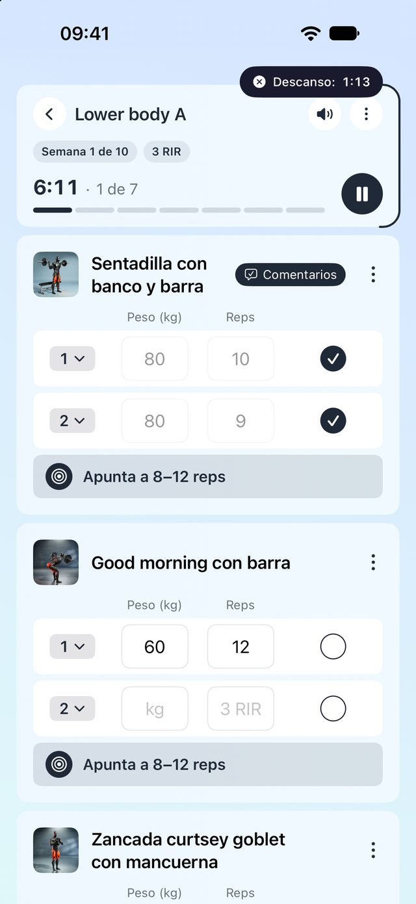
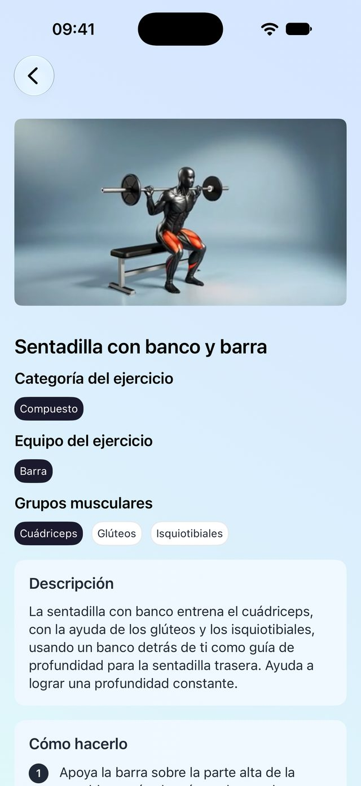

Responde unas preguntas y recibe un programa de varias semanas construido en torno a tu objetivo. Cada sesión te dice qué levantar, cuántas repeticiones buscar y cuánto esforzarte, y tu feedback da forma a la semana siguiente.
Gratis para empezar · Suscripción Pro para el Entrenamiento guiado



Un programa que se adapta a ti, un registro que se llena solo mientras entrenas y 300 ejercicios de los que puedes aprender de verdad.
Dile a LiftSmart tu objetivo, tu horario, tu equipamiento y los músculos en los que quieres centrarte. Construye un programa de varias semanas, o empieza con uno de los 138 planes listos.

Explora planes de varias semanas y entrenamientos sueltos por nivel, objetivo y equipamiento. Guarda los que te gusten en carpetas y empiézalos cualquier día.
Vídeo de demostración, mapa de músculos y equipamiento de cada movimiento, más Descripción, Cómo hacerlo y Consejos. Nunca más buscar a mitad de serie.

Entrenes lo que entrenes —una sesión guiada, un plan o un entrenamiento rápido— todo acaba en un mismo historial. Los récords personales se detectan automáticamente.
El registro es gratis para siempre. LiftSmart Pro desbloquea el Entrenamiento guiado y entrenamientos guardados ilimitados, mensual o anual.
Elige ejercicios y levanta, sin programa. Temporizadores de descanso, registro de series y un resumen al final.
Cada serie que registras se guarda para siempre: calendario, historial por ejercicio, volumen por grupo muscular.
Detectados automáticamente en cuanto superas uno, en cada rango de repeticiones.
Toda la biblioteca con guía es gratis, incluidos la búsqueda y los filtros por músculo.
Guarda hasta cuatro entrenamientos gratis. Pro quita el límite.
Entrenamiento guiado —programas personalizados y todos los planes de varias semanas— más entrenamientos guardados ilimitados.
Un tracker registra lo que hiciste. LiftSmart también decide qué haces después: construye el programa, fija objetivos semanales y los ajusta con tu feedback. La parte de tracker está incluida y es gratis.
No. El cuestionario pregunta tu nivel, y los planes para principiantes empiezan suaves y progresan poco a poco. Cada ejercicio tiene vídeo y guía paso a paso.
No. Con los entrenamientos rápidos eliges ejercicios y levantas sin ningún programa, y todo acaba igualmente en tu historial.
El registro, el historial, los récords personales, la biblioteca de ejercicios y hasta cuatro entrenamientos guardados son gratis para siempre. LiftSmart Pro desbloquea el Entrenamiento guiado y entrenamientos guardados ilimitados. Los precios se muestran en la app en tu moneda, mensual o anual.
No. Puedes empezar como invitado. Iniciar sesión con Apple o Google mantiene tus datos a salvo si cambias de móvil o reinstalas.
iPhone con iOS 26 o posterior. Los temporizadores de descanso aparecen como Actividades en Directo en la pantalla de bloqueo y en la Dynamic Island.
No. No hay anuncios, ni venta de datos, ni rastreo en otras apps. Los detalles están en la Política de privacidad.
Tu objetivo. Tu programa. Tu registro.
Descargar en elApp StorePara iPhone · iOS 26 o posterior · Gratis para empezar, suscripción Pro para el Entrenamiento guiado